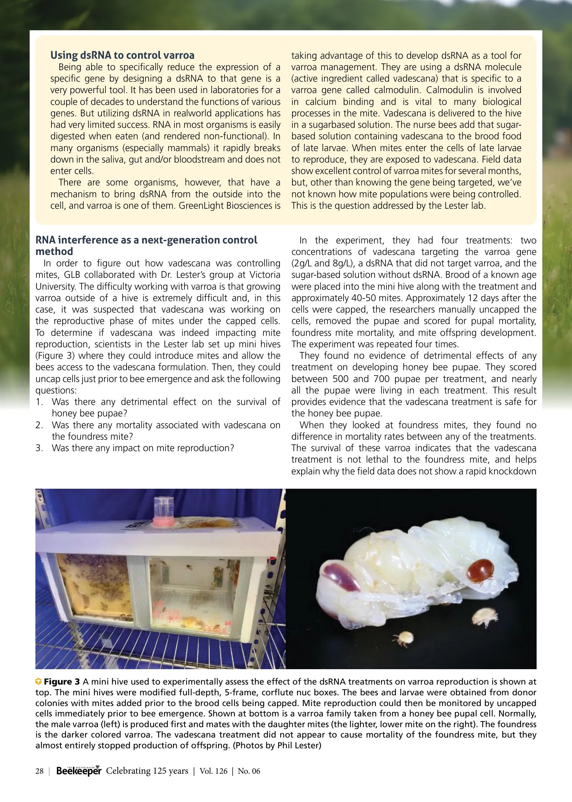

Using dsRNA to control varroa
Being able to specifically reduce the expression of a
specific gene by designing a dsRNA to that gene is a
very powerful tool. It has been used in laboratories for a
couple of decades to understand the functions of various
genes. But utilizing dsRNA in realworld applications has
had very limited success. RNA in most organisms is easily
digested when eaten (and rendered non-functional). In
many organisms (especially mammals) it rapidly breaks
down in the saliva, gut and/or bloodstream and does not
enter cells.
There are some organisms, however, that have a
mechanism to bring dsRNA from the outside into the
cell, and varroa is one of them. GreenLight Biosciences is
RNA interference as a next-generation control
method
In order to figure out how vadescana was controlling
mites, GLB collaborated with Dr. Lester’s group at Victoria
University. The difficulty working with varroa is that growing
varroa outside of a hive is extremely difficult and, in this
case, it was suspected that vadescana was working on
the reproductive phase of mites under the capped cells.
To determine if vadescana was indeed impacting mite
reproduction, scientists in the Lester lab set up mini hives
(Figure 3) where they could introduce mites and allow the
bees access to the vadescana formulation. Then, they could
uncap cells just prior to bee emergence and ask the following
questions:
1. Was there any detrimental effect on the survival of
honey bee pupae?
2. Was there any mortality associated with vadescana on
the foundress mite?
3. Was there any impact on mite reproduction?
In the experiment, they had four treatments: two
concentrations of vadescana targeting the varroa gene
(2g/L and 8g/L), a dsRNA that did not target varroa, and the
sugar-based solution without dsRNA. Brood of a known age
were placed into the mini hive along with the treatment and
approximately 40-50 mites. Approximately 12 days after the
cells were capped, the researchers manually uncapped the
cells, removed the pupae and scored for pupal mortality,
foundress mite mortality, and mite offspring development.
The experiment was repeated four times.
They found no evidence of detrimental effects of any
treatment on developing honey bee pupae. They scored
between 500 and 700 pupae per treatment, and nearly
all the pupae were living in each treatment. This result
provides evidence that the vadescana treatment is safe for
the honey bee pupae.
When they looked at foundress mites, they found no
difference in mortality rates between any of the treatments.
The survival of these varroa indicates that the vadescana
treatment is not lethal to the foundress mite, and helps
explain why the field data does not show a rapid knockdown
taking advantage of this to develop dsRNA as a tool for
varroa management. They are using a dsRNA molecule
(active ingredient called vadescana) that is specific to a
varroa gene called calmodulin. Calmodulin is involved
in calcium binding and is vital to many biological
processes in the mite. Vadescana is delivered to the hive
in a sugarbased solution. The nurse bees add that sugar-
based solution containing vadescana to the brood food
of late larvae. When mites enter the cells of late larvae
to reproduce, they are exposed to vadescana. Field data
show excellent control of varroa mites for several months,
but, other than knowing the gene being targeted, we’ve
not known how mite populations were being controlled.
This is the question addressed by the Lester lab.
Figure 3 A mini hive used to experimentally assess the effect of the dsRNA treatments on varroa reproduction is shown at
top. The mini hives were modified full-depth, 5-frame, corflute nuc boxes. The bees and larvae were obtained from donor
colonies with mites added prior to the brood cells being capped. Mite reproduction could then be monitored by uncapped
cells immediately prior to bee emergence. Shown at bottom is a varroa family taken from a honey bee pupal cell. Normally,
the male varroa (left) is produced first and mates with the daughter mites (the lighter, lower mite on the right). The foundress
is the darker colored varroa. The vadescana treatment did not appear to cause mortality of the foundress mite, but they
almost entirely stopped production of offspring. (Photos by Phil Lester)
28 |
Celebrating 125 years | Vol. 126 | No. 06